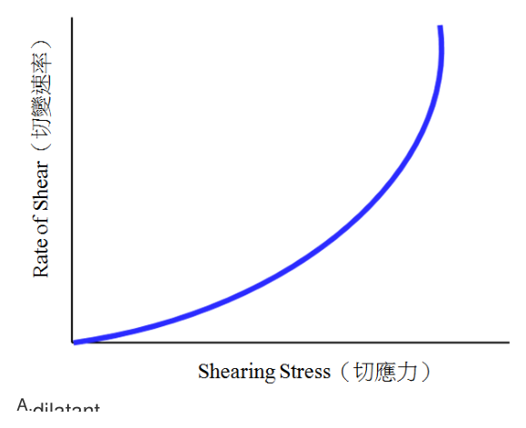
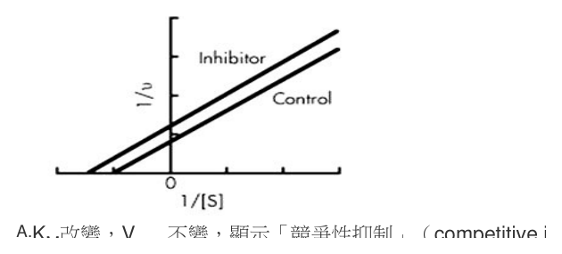
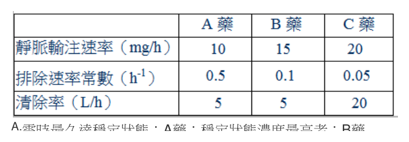

開卷有益 ／
藥師 ／ 藥劑學與生物藥劑學 ／ 106 年第 2 次106 年第 2 次藥師藥劑學與生物藥劑學試題與答案
這一頁是民國 106 年第 2 次藥師藥劑學與生物藥劑學的整份歷屆試題，共 80 題，題目與標準答案出自考選部「國家考試試題及測驗式試題答案」開放資料，其中 74 題附有詳解。以下逐題列出題幹、選項與答案；要計時作答或記錄成績，請用線上練習。
考選部原始場次代碼：106100
線上作答這一科 →
全部 80 題
第 1 題
下列何者無法改善不具有解離常數藥物之溶解度？
（A） 錯合化法（complexation）（B） 共溶煤（cosolvent）（C） 微小顆粒（micronization）（D） pH調整答案：（D）
詳解與考點 正解：pH 調整要靠藥物在不同 pH 之間轉成可離子化型態；不具有解離常數的藥物沒有可利用的酸鹼平衡，（D）pH 調整無法提高其 pH 依賴的溶解度，故選 D。
A：錯合化可藉 complexing agent 改變藥物的表觀溶解表現；（A）不必依賴藥物本身具有 pKa。
B：共溶媒可降低溶媒對非極性藥物的不利程度；（B）可用於非離子型難溶藥物。
C：微小顆粒會增大表面積並加快溶出，且粒徑降至次微米級時，依 Ostwald-Freundlich 方程式飽和溶解度亦隨之上升；這兩條路徑都不需要藥物本身具有 pKa，故（C）可行。pH 調整則完全依賴酸鹼平衡，對不具解離常數的藥物無效。
本題考點：pH-溶解度關係（pH-solubility profile）——只有具有 pKa 的藥物才能靠調整 pH 改變離子態比例；共溶媒與錯合（cosolvency and complexation）——非離子型難溶藥物可改變溶媒環境或形成可溶性複合物；微粒化（micronization）——判斷時要分開平衡溶解度與溶出速率。
第 2 題
一般而言，下列何者不是觀察藥物晶形方法？
（A） 高溫載臺顯微鏡（hot stage microscopy）（B） 微差掃描熱量測定法（differential scanning calorimetry）（C） 微差熱分析（differential thermal analysis）（D） 動態光散射（dynamic light scattering）答案：（D）
詳解與考點 正解：晶形觀察要取得晶體形態、熔融行為或固態相轉變的資訊；（D）dynamic light scattering 量測的是懸浮粒子的擴散與水合粒徑，不能直接判定藥物晶形，故選 D。
A：高溫載臺顯微鏡可在加熱過程中直接觀察晶體外觀與熔融變化；（A）可用於晶形相關觀察。
B：differential scanning calorimetry 可測量吸放熱事件與熔點轉變；（B）能提供晶型或多晶型的熱分析資訊。
C：differential thermal analysis 以樣品與參比物的溫差偵測熱事件；（C）同樣可協助辨識固態轉變。
本題考點：晶形分析（crystal form characterization）——選擇方法時看其是否直接反映固態形態或相轉變；熱分析（thermal analysis）——DSC 與 DTA 用熱事件區分晶型，hot stage microscopy 則補足視覺觀察；動態光散射（dynamic light scattering）——主要用於粒徑與分散狀態，不等同晶型鑑定。
第 3 題
已知某單質子酸藥物之pKa為4，濃度為5 mg/mL，在下列四個pH中，何者具有最高比例的離子態（ionized） 藥物？
（A） 2（B） 4（C） 6（D） 8答案：（D）
詳解與考點 正解：單質子酸的離子態比例用 Henderson-Hasselbalch 式 pH = pKa + log([A-]/[HA]) 判斷，因此 [A-]/[HA] = 10^(pH-4)。pH 2 時為 10^-2 = 0.01，約 1% 離子化；pH 4 時為 1，離子化約 50%；pH 6 時為 100，約 99%；pH 8 時為 10,000，約 99.99%。濃度 5 mg/mL 不改變固定 pH 下的此比例，（D）最高，故選 D。
A：pH 2 比 pKa 低 2 個單位，藥物以未解離的 HA 為主；（A）不是最高離子態比例。
B：pH 4 等於 pKa，離子態與未解離態各半；（B）仍低於較高 pH 的選項。
C：pH 6 時已大多離子化，但 [A-]/[HA] 只有 100；（C）仍低於（D）的 10,000。
本題考點：Henderson-Hasselbalch 式（Henderson-Hasselbalch equation）——弱酸以 pH-pKa 決定 [A-]/[HA]，pH 越高，離子化越完全；弱酸離子化方向（weak-acid ionization）——比較比例時先看 pH 與 pKa 的差值，不把總濃度誤當成決定因子。
第 4 題 待校
抽提生藥成分時，若以浸漬法（maceration）與滲漉法（percolation）來比較，浸漬法之特色為何？
（A） 以較少溶媒可得近乎完全抽提之效果（B） 最適合於抽提非屬軟性細胞組織之生藥（C） 浸漬容器最好選用內徑窄而長度長之圓筒，其抽提將可更有效率（D） 藥材浸漬時，通常不宜加熱也不宜振搖答案：（B）
第 5 題
碘之水溶液若不形成碘鹽複合體，其溶解度約為多少（%）？
（A） 0.03（B） 0.5（C） 2（D） 3答案：（A）
詳解與考點 正解：題目已排除碘鹽複合體，因此要用游離分子碘在水中的本質溶解度判斷，約為 0.03%；（A）相符，故選 A。
B、C、D：（B）0.5%、（C）2% 與（D）3% 都遠高於游離碘的水中溶解度。這些數值不能在未形成碘鹽複合體的條件下成立，故均非答案。
本題考點：碘的水溶性（aqueous solubility of iodine）——題幹排除碘鹽複合體時，直接採游離 I2 的低本質溶解度；碘鹽複合（iodide complexation）——碘離子形成複合體會提高表觀溶解度，判斷數值前要先確認複合體是否存在。
第 6 題
在製備芳香氨醑（Aromatic Ammonia Spirit）時，有關其操作步驟及產物之敘述，下列何者錯誤？
（A） 製備時選用之主藥碳酸銨，應呈半透明之塊狀（B） 製備時宜先以10%之氫氧化鈉溶液將碳酸銨溶解（C） 溶解碳酸銨後再加入酒精混合均勻即得（D） 本產品具驅風、制酸、醒腦等作用答案：（B）
詳解與考點 正解：芳香氨醑之傳統製法是以濃氨水溶解碳酸銨並釋出氨氣，而非以氫氧化鈉溶液溶解，「宜先以 10% 之氫氧化鈉溶液將碳酸銨溶解」之敘述與傳統標準製法所用之溶解劑不符，是本題錯誤的一項，故選 B。
A：碳酸銨作為主藥，品質良好者應呈半透明之塊狀，是選料時判斷品質的依據，此敘述正確。
C：溶解碳酸銨後再加入酒精混合均勻即得成品，是本品簡化後之基本製備流程，此敘述正確。
D：本品傳統上具驅風、制酸、醒腦等作用，符合芳香氨醑作為傳統急救提神製劑之用途描述，此敘述正確。
本題考點：芳香氨醑之傳統製法（Aromatic Ammonia Spirit preparation）——碳酸銨須以濃氨水溶解而非氫氧化鈉溶液，濃氨水兼具溶解與釋出氨氣之雙重作用；本品之傳統用途——驅風、制酸、醒腦為其歷史沿用之效能描述。
第 7 題
已知水的表面張力是72 dyne/cm，硫的臨界表面張力是30 dyne/cm，水對硫的接觸角是90度，若在水中加入 界面活性劑使水的表面張力變成18 dyne/cm，則水對硫的接觸角為多少度？
（A） 108（B） 90（C） 18（D） 0答案：（D）
詳解與考點 正解：硫的臨界表面張力為 30 dyne/cm；加入界面活性劑後，水的表面張力由 72 降為 18 dyne/cm，已低於臨界表面張力。液體可完全潤濕硫表面，接觸角為 0°，故選 D。
A：108° 代表比原本 90° 更不潤濕；降低液體表面張力的結果應朝較易潤濕方向改變，（A）方向相反。
B：90° 是未加入界面活性劑時給定的接觸角；（B）沒有反映表面張力已降低。
C：18 是加入界面活性劑後水的表面張力數值，單位為 dyne/cm；（C）把表面張力誤作接觸角。
本題考點：臨界表面張力（critical surface tension）——液體表面張力降至固體臨界表面張力以下時，判為完全潤濕；接觸角與潤濕性（contact angle and wettability）——接觸角越小代表潤濕越好，0° 表示完全潤濕。
第 8 題
使帶負電之金膠溶體產生凝結所需添加之陽離子最小凝結濃度，下列何者正確？
（A） Na+＞Al3+（B） Al3+＞Ca2+（C） Mg2+＞Ca2+（D） Mg2+＞Na+答案：（A）
詳解與考點 正解：帶負電的金膠溶體以陽離子為 counterion，依 Schulze-Hardy rule，counterion 價數越高，凝結力越強，所需最小凝結濃度越低。因此單價 Na+ 所需濃度高於三價 Al3+；（A）正確，故選 A。
B：Al3+ 的凝結力比 Ca2+ 強，所需最小凝結濃度應更低；（B）把濃度大小的方向顛倒。
C：Mg2+ 與 Ca2+ 都是二價 counterion；只用 Schulze-Hardy rule 不能推出（C）所列的大小次序。
D：Mg2+ 比 Na+ 凝結力強，所需最小凝結濃度應較低；（D）與規則的方向相反。
本題考點：Schulze-Hardy rule（Schulze-Hardy rule）——膠體凝結時，反離子價數越高，凝結能力越強；最小凝結濃度（critical coagulation concentration）——凝結能力與所需濃度呈反向，先判價數再比較濃度。
第 9 題
下列何者是無機親水膠體？
（A） tragacanth jelly（B） pectin paste（C） carbowax bases（D） bentonite gel答案：（D）
詳解與考點 正解：bentonite 是鋁矽酸鹽黏土，可在水中形成無機親水膠體；（D）bentonite gel 符合題意，故選 D。
A：tragacanth 是植物來源的天然多醣膠；（A）屬有機親水膠體。
B：pectin 為植物多醣；（B）形成的 pectin paste 不是無機膠體。
C：carbowax 為 polyethylene glycol 類合成有機聚合物；（C）不屬無機親水膠體。
本題考點：親水膠體分類（hydrophilic colloid classification）——先分辨分散相是礦物性無機材料或有機高分子；bentonite gel（bentonite gel）——見到鋁矽酸鹽黏土即歸為無機親水膠體。
第 10 題
有關sodium stearate的敘述，下列何者正確？
（A） 對等離子（counterion）是陰離子（B） 屬陰離子界面活性劑（C） 屬硫酸烷結構（D） 稱為綠肥皂答案：（B）
詳解與考點 正解：sodium stearate 解離後以 stearate 作為帶負電的親水端、Na+ 作為對等離子，因此屬陰離子界面活性劑；（B）正確，故選 B。
A：sodium stearate 的對等離子是 Na+，屬陽離子；（A）把對等離子的電荷方向說反。
C：sodium stearate 是脂肪酸 carboxylate 鹽，不是 alkyl sulfate 結構；（C）混淆了肥皂與硫酸酯型界面活性劑。
D：綠肥皂通常指鉀皂等軟肥皂；（D）不等同於 sodium stearate 的鈉皂。
本題考點：陰離子界面活性劑（anionic surfactant）——親水端解離後帶負電者歸為陰離子型，counterion 則帶正電；肥皂結構（soap structure）——脂肪酸 carboxylate 鹽是肥皂，須與 alkyl sulfate 類分開判斷。
第 11 題
當帶正電荷procaine與帶負電荷penicillin形成較低溶解度的Procaine Penicillin，此現象為何？
（A） complex coacervation（B） flocculation（C） coalescence（D） creaming答案：（A）
詳解與考點 正解：帶正電的 procaine 與帶負電的 penicillin 因相反電荷結合，形成較低溶解度的複合體；依本題的分散系分類，這是 complex coacervation，故選 A。
B：flocculation 是分散粒子形成鬆散、通常可再分散的聚集；（B）不是兩種異電荷藥物形成難溶複合體。
C：coalescence 是乳劑液滴合併成較大液滴的現象；（C）不涉及 procaine 與 penicillin 的離子結合。
D：creaming 是乳劑液滴因密度差上浮或下沉而濃縮；（D）沒有形成新的低溶解度複合物。
本題考點：複合凝聚（complex coacervation）——相反電荷成分結合並形成較低溶解度相時，依分散系分類判為 complex coacervation；乳劑不安定性（emulsion instability）——flocculation、coalescence 與 creaming 分別是粒子聚集、液滴合併與液滴遷移，不能與離子複合混用。
第 12 題
Colloid顆粒大小範圍為下列何者？
（A） ＜ 0.01 nm（B） 0.01～0.5 nm（C） 2～500 nm（D） 1～5 µm答案：（C）
詳解與考點 正解：Colloid 的粒徑介於分子分散與粗分散之間，此題採 2-500 nm 的範圍作判別。這個尺度足以產生布朗運動與 Tyndall effect，但尚未大到如粗懸浮粒子般易快速沉降；（C）符合，故選 C。
A：＜ 0.01 nm 比原子直徑（約 0.1 nm）還小，物理上不存在此粒徑的分散相；真溶液中分子、離子的尺度約為 0.1～1 nm，故並非 colloid。
B：0.01-0.5 nm 仍遠小於膠體粒徑，不能形成題目所稱的分散系統。
D：1-5 μm 已落入較大的粗分散粒徑範圍，沉降傾向與膠體不同。
本題考點：膠體粒徑（colloidal particle size）——先把尺度置於分子分散與粗分散之間，數 nm 至數百 nm 的選項才是膠體；丁達耳效應與布朗運動（Tyndall effect, Brownian motion）——判斷膠體時以光散射與小粒徑熱運動為輔助線索。
第 13 題
下圖為何種流體特性？

（A） dilatant（B） elastic（C） Newtonian（D） pseudoplastic答案：（D）
詳解與考點 正解：圖中橫軸為 shearing stress、縱軸為 rate of shear，曲線由原點出發，起始段近乎貼著橫軸緩慢上升，隨 shearing stress 增加後曲線斜率逐漸變陡、往縱軸方向翹起，呈現向上凹（concave up）的形狀。以冪次定律 F = K·Gⁿ 描述非牛頓流體時，表觀黏度 η = F/G，其值隨 G 增加而下降對應 n < 1；n < 1 時 G 對 F 作圖會呈現愈往右愈陡的向上凹曲線，恰與圖中走勢相符，屬 pseudoplastic（假塑性）流體的典型圖形，故選 D。
A：dilatant 流體的表觀黏度隨切變速率增加而升高，rate of shear 對 shearing stress 作圖應呈現向下凹、逐漸趨平的曲線，與圖中愈到後段愈陡的走勢相反。
B：elastic 描述的是材料受應力後可回復形變的特性，不是以 rate of shear 對 shearing stress 作圖來表現的流體特性分類，圖中曲線形式也不對應彈性行為。
C：Newtonian 流體的 rate of shear 與 shearing stress 成正比，圖形應為通過原點的直線，與圖中彎曲的曲線明顯不同。
本題考點：非牛頓流體的流變圖判讀（rheogram of non-Newtonian fluids）——曲線凹向縱軸（愈到後段愈陡）為假塑性、凹向橫軸（愈到後段愈平）為脹性；冪次定律與表觀黏度的關係（power-law model, apparent viscosity）——n<1 對應剪切變稀、n>1 對應剪切增稠，n=1 即為牛頓流體。
第 14 題
下列何者不適合作為sulfonamides粒子之凝絮劑？
（A） Ca++（B） Al+++（C） Cl-（D） gelatin A在pH=3答案：（C）
詳解與考點 正解：sulfonamides 懸浮粒子通常帶負電，凝絮劑須提供相反電荷或能吸附於粒子的高分子，降低 zeta potential 以形成可再分散的鬆散凝絮。Cl- 與粒子電荷同向，不能有效中和表面電荷，故（C）不適合，故選 C。
A：Ca++ 為陽離子，可壓縮帶負電粒子的電雙層並降低粒子間排斥力，能促進凝絮。
B：Al+++ 的電荷數更高，對帶負電粒子的電荷中和作用明顯，屬可用的凝絮劑。
D：gelatin A 在 pH=3 帶正電，可吸附於帶負電的 sulfonamides 粒子表面並協助凝絮，因此適合。
本題考點：凝絮（flocculation）——選凝絮劑時先看懸浮粒子表面電荷，異電荷離子或可吸附的高分子才會降低排斥；zeta potential——當粒子表面電位降到適當範圍，系統形成鬆散凝絮而較容易重新分散。
第 15 題
當一物質須超越一定的搖力（yield stress）後，其黏度會變小時，此物質具何種流變特性？
（A） Newtonian flow（B） plastic flow（C） pseudoplastic flow（D） dilatant flow答案：（B）
詳解與考點 正解：物質必須先克服 yield stress 才開始流動，這是 plastic flow 的核心判準。超過屈服值後，內部結構被破壞而流動阻力下降，表觀黏度隨剪切條件呈下降，故（B）符合，故選 B。
A：Newtonian flow 在各剪切速率下黏度維持固定，且不以克服 yield stress 為開始流動的條件。
C：pseudoplastic flow 也有剪切變稀現象，但其流動曲線通常通過原點，分辨關鍵在於不要求先有固定的 yield stress。
D：dilatant flow 是剪切變稠，剪切速率增加時表觀黏度反而上升，方向與題述相反。
本題考點：塑性流動（plastic flow）——先問是否存在 yield stress；必須超過屈服值才流動者歸此類；假塑性流動（pseudoplastic flow）——若無固定屈服值而隨剪切增加變稀，才以此名稱判定；剪切變稠（dilatant flow）——黏度隨剪切增加而上升時，不能與變稀型流動混淆。
第 16 題
有關粒子密度大小之比較，下列何者正確？
（A） bulk density > granule density > true density（B） bulk density > true density > granule density（C） true density > granule density > bulk density（D） true density > bulk density > granule density答案：（C）
詳解與考點 正解：true density 將粒子內外空隙都排除，只以固體真正體積計算，因而數值最大。granule density 仍包含顆粒內孔隙，bulk density 還加入顆粒間空隙，所以 true density > granule density > bulk density；（C）符合，故選 C。
A：把 bulk density 排在最大，忽略了它的計算體積含有最多的顆粒間空隙，密度不會最高。
B：將 bulk density 排在 true density 之前，同樣與空隙使表觀體積增大的原理相反。
D：true density 雖然最大，但 bulk density 所含空隙比 granule density 多，因此後兩者的次序顛倒。
本題考點：真密度（true density）——只以固體本身體積為分母，排除所有孔隙時數值最大；顆粒密度與堆積密度（granule density, bulk density）——內部孔隙使前者低於真密度，顆粒間空隙使後者再降低。
第 17 題
有關栓劑的敘述， 下列何者錯誤？
（A） 使用於不同體腔，如肛門、尿道、陰道（B） 常用於局部，鮮少應用在全身作用（C） 可可脂栓劑，適用於內痔治療製劑（D） 甘油明膠栓劑，適用於製作陰道製劑答案：（B）
詳解與考點 正解：本題問錯誤敘述，判斷要分開局部與全身性用藥用途。suppository 可經直腸、陰道或尿道給藥，除了局部治療外，直腸給藥也能讓適合的藥物吸收進入全身循環；因此（B）把適用途徑說得過窄，故選 B。
A：suppository 可依投藥部位分為肛門栓劑、尿道栓劑與陰道栓劑，使用於不同體腔的敘述正確。
C：可可脂在體溫附近熔融，是常用肛門栓劑基劑，可承載治療內痔的局部用藥。
D：甘油明膠栓劑屬水溶性基劑，適合製作陰道用製劑，敘述正確。
本題考點：栓劑用途（suppository use）——判斷用途時不可只限於局部作用，直腸給藥亦可作全身性投藥；直腸給藥（rectal administration）——藥物若能經直腸黏膜吸收，即可用於需要避免口服途徑的全身性治療。
第 18 題
水溶性軟膏基劑具有下列那些性質？①無水 ②可吸水 ③不可吸水 ④可用水來移除 ⑤不黏膩
（A） 僅①②（B） ③④（C） 僅②④⑤（D） ①②④⑤答案：（D）
詳解與考點 正解：水溶性軟膏基劑多以 polyethylene glycol 組成，判準是其本身無水、可再吸收水分、可由水洗去且不具油膩感。①②④⑤均成立，③「不可吸水」與其親水性質相反，故（D）符合，故選 D。
A：僅列①②，漏掉水溶性基劑可用水移除及不黏膩兩項特性，組合不完整。
B：納入③「不可吸水」，與水溶性基劑可吸水的性質相反，且未列出無水與不黏膩。
C：僅列②④⑤，其中②可吸水、④可用水移除、⑤不黏膩皆成立，但漏掉①「無水」——水溶性基劑（polyethylene glycol 類）本身不含水，因此組合不完整。
本題考點：水溶性軟膏基劑（water-soluble ointment base）——看到 polyethylene glycol 類基劑時，判為無水、可吸水且可水洗；軟膏基劑洗除性（washability）——能以水移除的是親水性基劑特徵，不能與油脂性基劑混為一談。
第 19 題
有關軟膏劑型的敘述，下列何者錯誤？
（A） 冷霜多屬於W/O軟膏基劑（B） 親水軟膏屬於O/W軟膏基劑（C） 單軟膏屬於吸收性軟膏基劑（D） 親水軟石蠟屬於吸收性軟膏基劑答案：（C）
詳解與考點 正解：本題問錯誤敘述。單軟膏（simple ointment）以油脂性成分為主，歸入油脂性軟膏基劑，不是靠乳化劑吸入水分的吸收性基劑；因此（C）錯在基劑分類，故選 C。
A：冷霜多為 W/O 乳劑型基劑，油相為連續相，屬 W/O 軟膏基劑的敘述正確。
B：親水軟膏為 O/W 型基劑，可與水混和並可水洗，分類正確。
D：親水軟石蠟含有能協助吸收水分的成分，屬吸收性軟膏基劑，敘述正確。
本題考點：油脂性軟膏基劑（oleaginous ointment base）——以單軟膏等為線索時，判為疏水且不易水洗；吸收性與乳劑型基劑（absorption base, emulsion base）——前者靠乳化成分吸水，後者再依連續相分為 W/O 或 O/W。
第 20 題
依Fick's law，藥物之皮膚吸收速率與下列何者成反比？
（A） 分配係數（partition coefficient）（B） 藥物於劑型內之濃度（C） 藥物於劑型內之溶解度（D） 皮膚厚度答案：（D）
詳解與考點 正解：Fick's law 可寫為 dQ/dt = D·K·A·ΔC/h，皮膚厚度 h 位於分母；角質層越厚，擴散路徑越長，單位時間通過量越小。因此吸收速率與（D）成反比，故選 D。
A：分配係數 K 反映藥物進入皮膚脂質相的能力，K 增加會使其他條件相同下的通量增加，屬正向關係。
B：藥物於劑型內的濃度提高會增加濃度梯度 ΔC，依 Fick's law 會提高擴散驅動力。
C：在其他條件固定時，較高的劑型內溶解度可提高可供擴散的濃度，吸收速率不會與其成反比。
本題考點：菲克第一定律（Fick's first law）——把通量寫成濃度梯度與擴散係數在分子、路徑長度在分母，即可判斷正反比；經皮吸收（percutaneous absorption）——比較配方或皮膚條件時，先看角質層厚度是否改變擴散距離。
第 21 題
下列何者不適合用於栓劑基劑？
（A） 可可脂（B） 半乳糖（C） 甘油明膠（D） 聚乙二醇答案：（B）
詳解與考點 正解：栓劑基劑要能在體腔中熔融、溶解或分散，並能承載藥物。半乳糖是單醣，並非藥劑學上常用的栓劑基劑；（B）不適合，故選 B。
A：可可脂會在體溫附近熔融，是經典的脂溶性栓劑基劑。
C：甘油明膠可溶於體液並常用於陰道栓劑，能作為水溶性栓劑基劑。
D：聚乙二醇可溶於體液，常配成不同分子量組合以調整硬度，適合用於栓劑。
本題考點：栓劑基劑（suppository base）——先判斷材料能否在體溫或體液中釋放藥物，再區分脂溶性與水溶性類別；聚乙二醇基劑（polyethylene glycol base）——以溶解而非熔融釋放藥物，常用不同分子量調整性質。
第 22 題
下列何者可增加vaseline的吸水能力？
（A） beeswax（B） glyceryl monostearate（C） paraffin oil（D） stearic acid答案：（B）
詳解與考點 正解：vaseline 為油脂性基劑，本身不易吸水。glyceryl monostearate 具有界面活性，可協助形成可吸水的系統並提高 vaseline 的吸水能力；故（B）符合，故選 B。
A：beeswax 主要用來提高軟膏硬度與調整稠度，不是增加 vaseline 吸水能力的界面活性成分。
C：paraffin oil 為疏水性液態油，主要使基劑較柔軟或流動，不能賦予吸水能力。
D：游離 stearic acid 加入時主要調整稠度，未如 glyceryl monostearate 般提供有效的界面活性，不能作為此題的吸水增強劑。
本題考點：吸收性軟膏基劑（absorption base）——油脂性基劑若加入適當乳化成分，即可提高吸水能力；界面活性劑（surfactant）——判斷添加物功能時，能降低油水界面張力者才可能協助基劑吸收水相。
第 23 題
軟膏中添加之azone，其作用為何？
（A） 穿透促進劑（B） 硬化劑（C） 抗氧化劑（D） 防腐劑答案：（A）
詳解與考點 正解：azone 加入軟膏的目的在於提高藥物跨越皮膚角質層的通透性，它會改變角質層脂質排列，因而作為 penetration enhancer；（A）符合，故選 A。
B：硬化劑用於提高基劑硬度或稠度，並不以改變皮膚屏障來提升藥物穿透為目的。
C：抗氧化劑是防止藥物或油脂性基劑氧化變質，功能與經皮通透性不同。
D：防腐劑用來抑制微生物生長，不能取代促進藥物穿越角質層的成分。
本題考點：穿透促進劑（penetration enhancer）——若添加物能暫時改變角質層脂質或提高藥物分配進入皮膚的能力，判為此類；角質層屏障（stratum corneum barrier）——經皮製劑的主要阻力在角質層，與防腐或抗氧化功能須分開判讀。
第 24 題
經皮輸送製劑可分為backing layer、control membrane、drug reservoir、adhesive layer和protective peel strip等層，依接觸皮膚距離由近到遠依序為：
（A） adhesive layer→control membrane→drug reservoir→backing layer（B） drug reservoir→control membrane→adhesive layer→protective peel strip（C） adhesive layer→drug reservoir→control membrane→backing layer（D） protective peel strip→control membrane→ adhesive layer→drug reservoir答案：（A）
詳解與考點 正解：接觸皮膚的一側先是 adhesive layer，黏著層之外是控制釋放速率的 control membrane，接著才是 drug reservoir，最外層為 backing layer。因此由近至遠依序為 adhesive layer → control membrane → drug reservoir → backing layer；（A）符合，故選 A。
B：將 drug reservoir 排在最靠近皮膚處，且把使用前應移除的 protective peel strip 列入貼附後的層次，順序不對。
C：把 drug reservoir 直接接在 adhesive layer 後，略過應位於兩者之間的 control membrane，無法符合題述的膜控制結構。
D：protective peel strip 的功能是保存時保護黏著層，貼用前即移除，不能列為最靠近皮膚的一層。
本題考點：經皮治療系統（transdermal therapeutic system）——由皮膚向外辨認時先找黏著層，再看控釋膜、藥物儲庫與背襯層；保護離型膜（protective peel strip）——它只在使用前保護黏著面，判斷使用中的層次時必須排除。
第 25 題
Oramorph SR tablets是一種含有morphine sulfate的親水性纖維素基質錠片（matrix tablets），其主要之控釋 材料為何？
（A） ethyl cellulose（B） hydroxypropyl methylcellulose（C） carboxymethyl cellulose（D） hydroxyethyl cellulose答案：（B）
詳解與考點 正解：Oramorph SR 是親水性纖維素 matrix tablet，hydroxypropyl methylcellulose 接觸水後膨潤形成凝膠層，讓 morphine sulfate 的擴散與基質侵蝕受控，為主要控釋材料。因此（B）符合，故選 B。
A：ethyl cellulose 為疏水性聚合物，雖可用於某些控釋系統，但不是題述親水性 Oramorph SR 基質的主要材料。
C：carboxymethyl cellulose 與題述產品採用的 hydroxypropyl methylcellulose 不同，並非其指定的主要控釋聚合物。
D：hydroxyethyl cellulose 雖同為纖維素衍生物，但不是 Oramorph SR 所用的主要基質材料。
本題考點：親水性基質錠（hydrophilic matrix tablet）——遇水形成凝膠層的聚合物可同時控制擴散與基質侵蝕；羥丙基甲基纖維素（hydroxypropyl methylcellulose）——辨識親水性控釋錠時，HPMC 膨潤成膠是關鍵線索。
第 26 題
通常咀嚼錠（chewable tablets）不含下列何項賦形劑？
（A） 稀釋劑（diluents）（B） 黏合劑（binders）（C） 崩散劑（disintegrants）（D） 潤滑劑（lubricants）答案：（C）
詳解與考點 正解：chewable tablets 在口腔中經咀嚼後才吞下，設計上不依賴錠劑在胃腸液中自行崩散。因此通常不加入以快速崩裂為目的的 disintegrants；（C）符合，故選 C。
A：稀釋劑可提供足夠錠重並改善口感，是咀嚼錠常見的賦形劑。
B：黏合劑使粉體在壓錠後維持適當機械強度，咀嚼錠仍可使用。
D：潤滑劑可降低壓錠與出錠時的摩擦，屬製程所需的常見賦形劑。
本題考點：咀嚼錠（chewable tablet）——藥物先靠咀嚼分散，不以胃腸道內自行崩散為必要條件；崩散劑（disintegrant）——其用途是讓吞服後仍完整的錠劑崩裂，與咀嚼錠的使用方式不相符。
第 27 題
下列何者不具腸溶特性？
（A） cellulose acetate phthalate（B） hydroxypropylcellulose（C） hydroxypropyl methylcellulose phthalate（D） shellac答案：（B）
詳解與考點 正解：腸溶材料的判準是耐酸並在較高 pH 才溶解。hydroxypropylcellulose 是水溶性纖維素衍生物，沒有 phthalate 酸性基團所帶來的 pH 依賴溶解特性，故不具腸溶性；（B）符合，故選 B。
A：cellulose acetate phthalate 含有 phthalate 基團，在酸性胃液中不溶而在腸道較高 pH 下溶解，具腸溶特性。
C：hydroxypropyl methylcellulose phthalate 也是具 pH 依賴溶解性的腸溶聚合物，名稱中的 phthalate 即為辨識線索。
D：shellac 可形成耐胃酸的膜衣，常用作腸溶包衣材料，並非不具腸溶性者。
本題考點：腸溶包衣（enteric coating）——先看聚合物是否耐胃酸且在腸道較高 pH 溶解；phthalate 聚合物（phthalate polymer）——纖維素衍生物帶有 phthalate 時常具腸溶性，未帶此酸性基團的水溶性纖維素則須分開判斷。
第 28 題
製備膜衣錠時，配方中castor oil的作用為何？
（A） film former（B） glossant（C） opaquant（D） plasticizer答案：（D）
詳解與考點 正解：film coating 中 plasticizer 用來降低成膜聚合物的玻璃轉移溫度，增加膜的柔軟性並減少乾燥後龜裂。castor oil 可擔任此角色，故（D）符合，故選 D。
A：film former 是形成連續膜層的主要聚合物，功能在建立膜本體，不是以柔化膜為主。
B：glossant 用來增加錠劑表面光澤，與改善膜的延展性及防止裂紋不同。
C：opaquant 用來遮光或提供不透明外觀，常以顏料達成，不能取代 plasticizer。
本題考點：增塑劑（plasticizer）——配方若要提高膜衣柔韌性、降低脆裂，選能塑化聚合物的成分；膜衣功能成分（film-coating excipient）——成膜、增光、遮光與增塑各有不同目的，應依製程問題分辨。
第 29 題
依據biopharmaceutics classification system（BCS）分類，低溶解度高穿透性的藥是屬於下列何類？
（A） class 1（B） class 2（C） class 3（D） class 4答案：（B）
詳解與考點 正解：biopharmaceutics classification system 以溶解度與腸道穿透性兩軸分類。class 1 為高溶解度、高穿透性；class 2 為低溶解度、高穿透性；class 3 為高溶解度、低穿透性；class 4 為低溶解度、低穿透性。題幹與（B）class 2 完全相符，故選 B。
A：class 1 要求高溶解度與高穿透性，低溶解度已不符合此類別。
C：class 3 的關鍵是低穿透性，與題幹明示的高穿透性相反。
D：class 4 同時是低溶解度與低穿透性，少了題幹所給的高穿透性條件。
本題考點：生物藥劑學分類系統（biopharmaceutics classification system）——先把溶解度與穿透性各判高低，再以兩個條件交叉定位 class；BCS class 2——低溶解度但高穿透性時，劑型開發的主要限制通常在溶解或溶離，而不是穿過腸道上皮。
第 30 題
藥物具有下列何種特性是不適合或不需要製備成長效性（extended-release）劑型？
（A） 藥物劑量為不高不低者（B） 藥理機轉非抑制酵素者（C） 排除或吸收速率適中者（D） 臨床使用於急性症狀者答案：（D）
詳解與考點 正解：長效性劑型的目的在維持較平穩的血中濃度，卻無法迅速起效或隨時調整劑量。急性症狀常需快速達效與短時間內調整治療，將藥物製成 extended-release 會失去這項彈性；（D）不適合，故選 D。
A：劑量不高不低時，錠劑或膠囊大小較能容納控釋材料並維持可接受的服用體積，並非不適合的特性。
B：是否為抑制酵素的藥理機轉不是長效劑型的通用排除條件，非抑制酵素本身不會使藥物不需要製成長效劑型。
C：排除或吸收速率適中時較有機會配合控釋設計，並非急性症狀那種明確的不適合條件。
本題考點：長效性劑型（extended-release dosage form）——先判斷是否需要快速起效或快速調整療效，若是急性情境即不宜長效化；候選藥物特性（drug candidate selection）——劑量與吸收、排除條件會影響劑型可行性，但不能取代對臨床時效性的判斷。
第 31 題
有些藥物能與藥學可接受的化學物質形成複合體（complex），此種複合體的藥物溶離會依據外在體液的酸鹼 值而緩慢釋出，因此達到長效型的藥物劑型，最常用的藥學可接受性化學物質為何？
（A） succinic acid（B） tartaric acid（C） citric acid（D） tannic acid答案：（D）
詳解與考點 正解：若利用藥物與可接受化學物質形成 complex 以延緩溶離，需選能生成難溶、在體液 pH 下逐步解離的配對物。tannic acid 可形成藥物 tannate complex，是此類長效設計的常用酸性物質；故（D）符合，故選 D。
A：succinic acid 雖為藥學可接受的有機酸，但不是此類以難溶 complex 延緩釋放時常用的 tannate 配對物。
B：tartaric acid 可用於調整酸鹼或其他配方用途，卻不是題述長效 complex 最常用的化學物質。
C：citric acid 常見於酸化或螯合等配方用途，不能取代 tannic acid 形成題述的 tannate complex。
本題考點：複合體長效製劑（complex-based sustained release）——若藥物先形成難溶複合體，再隨體液條件逐步解離，即可延緩溶離；鞣酸鹽複合體（tannate complex）——看到以外在 pH 控制緩慢釋放的敘述時，可用 tannic acid 與藥物形成的複合體判定。
第 32 題
下列設備或儀器都常用於粒徑之測定，但對於其相關用途之敘述，下列何者並不恰當？
（A） 標準篩主要係用以測定surface diameter（B） Andreasen apparatus主要係用以測定Stokes’diameter（C） Coulter Counter主要係用以測定volume diameter（D） 顯微鏡主要係用以測定projected area diameter答案：（A）
詳解與考點 正解：本題比較的是各儀器所得到的等效粒徑定義。（A）標準篩的結果由粒子能否通過固定孔徑決定，對應的是 sieve diameter，不是 surface diameter；其餘三項的儀器與粒徑定義相符，故選 A。
B：Andreasen apparatus 以粒子在液體中的沉降行為量測粒徑，依據 Stokes 定律所求得的是 Stokes’ diameter，敘述正確。
C：Coulter Counter 量測粒子通過小孔時所排開的電解質體積，訊號與粒子體積相連，故為 volume diameter，敘述正確。
D：顯微鏡由二維投影影像量測粒子面積，再換算等效直徑，故為 projected area diameter，敘述正確。
本題考點：篩分粒徑（sieve diameter）——判斷篩析法時看粒子是否通過孔徑，不把孔徑條件誤認為表面積量測；沉降與電阻法粒徑（Stokes’ diameter、volume diameter）——沉降法看終端沉降行為，Coulter Counter 看排開液體的體積；顯微鏡粒徑（projected area diameter）——由平面投影面積換算等效直徑時使用。
第 33 題
有關噴霧乾燥機之使用，下列敘述何者較正確？
（A） 以油壓滾輪混合粉末（B） 使用乾式黏合劑造粒（C） 以微波乾燥顆粒（D） 可用於藥物之包衣答案：（D）
詳解與考點 正解：噴霧乾燥是將藥物與包衣材料的溶液、懸浮液或乳液霧化後，以熱氣流快速移除溶媒的製程；因此可形成被包衣材料包覆的乾燥微粒，能用於藥物包衣，故選 D。
A：以油壓滾輪壓實粉末是 roller compaction 的作法，屬乾式造粒或壓實程序，不是噴霧乾燥的霧化與熱氣流乾燥。
B：使用乾式黏合劑使粉末聚集是乾式造粒的概念；噴霧乾燥必須先有可霧化的液相分散系統。
C：噴霧乾燥的乾燥能量主要來自乾燥氣體與液滴的熱質傳，不是以微波直接乾燥顆粒。
本題考點：噴霧乾燥（spray drying）——遇到液態配方要快速轉成粉末時，看是否可將液滴霧化並以熱氣流除去溶媒；微膠囊與包衣（microencapsulation、coating）——包衣材料在液滴乾燥時可於藥物周圍形成膜層；乾式造粒（dry granulation）——滾壓或壓實粉末不需要先製備可霧化液相。
第 34 題
比較methylprednisolone之晶型I（安定型）與晶型II（次安定型），下列何種特性會顯著地呈現出晶型I大於晶 型II？
（A） 溶解度（B） 熔點（C） 體外溶離速率（D） 口服吸收速率答案：（B）
詳解與考點 正解：關鍵在晶型 I 是安定型。安定晶型的自由能（化學位能）較低、分子排列較緊密，晶格能較大，破壞晶格所需能量較高，因此熔點會高於次安定的晶型 II，故選 B。
A：安定晶型的化學位能較低，通常反而有較低的溶解度；較高溶解度是次安定晶型常見的特徵。
C：體外溶離速率受溶解度與晶格穩定性影響，晶型 II 較容易溶解，通常會比晶型 I 快。
D：口服吸收速率常受溶離步驟限制；在其他條件相同時，較快溶離的晶型 II 較可能有較快吸收，不是晶型 I。
本題考點：多晶型（polymorphism）——比較安定與次安定晶型時，先以晶格穩定性判斷熱力學性質；熔點與晶格能（melting point、lattice energy）——晶格越穩定，熔融所需能量越大，熔點越高；溶解與吸收（solubility、dissolution rate）——安定型通常犧牲溶解度與溶離速率，次安定型則方向相反。
第 35 題
有關膠囊劑之敘述，下列何者較正確？
（A） 主成分含量通常不需標示出（B） 硬或軟膠囊劑進行崩散試驗時，其使用之裝置及規範稍有不同（C） 溶離試驗之時程，依各品目之規定而異（D） 軟膠囊劑通常只允許填充液體溶液答案：（C）
詳解與考點 正解：膠囊劑的溶離試驗時程須依個別品目規定的溶媒、轉速、取樣時間與允收標準執行，不能用單一固定時程概括所有產品，故選 C。
A：主成分及其含量是藥品標示與品質辨識的核心資訊，不能通常省略。
B：硬、軟膠囊的崩散檢查都以藥典規範的裝置與條件執行；實際差異應由個別品目規定判定，不能僅因硬、軟膠囊分類就概括為裝置與規範必然不同。
D：軟膠囊可填充油性液體、懸浮液或半固體內容物，不限於液體溶液。
本題考點：溶離試驗（dissolution test）——判斷時程與規格時，優先回到個別品目的法定條件，不把一種劑型的條件套用全部產品；崩散試驗（disintegration test）——崩散是劑型破裂與分散的測試，仍須依指定裝置與條件判讀；軟膠囊填充物（soft gelatin capsule fill）——凡為可封裝且相容的液態、懸浮或半固態系統皆可能使用。
第 36 題
水性膜衣包覆處方中添加塑化劑（plasticizer）之主要目的為改善膜衣的何種特性？
（A） 易於被乾燥（B） 較易於貼附（C） 易溶解於水（D） 易軟化成膜答案：（D）
詳解與考點 正解：水性膜衣中的 plasticizer 會降低聚合物的玻璃轉移溫度並增加鏈段可動性，使噴灑後的聚合物粒子較易融合、延展成連續而不易龜裂的膜，故選 D。
A：膜衣是否容易乾燥主要受溶媒揮發性、進風條件與熱質傳影響，plasticizer 的主要功能不是加快乾燥。
B：膜衣對錠芯的貼附性會受表面性質、包衣聚合物與製程影響；plasticizer 雖可間接改善膜完整性，但不是為了主要提高貼附而添加。
C：膜衣的水溶性取決於包衣聚合物與配方設計，plasticizer 不會以提高水溶性作為主要目的。
本題考點：塑化劑（plasticizer）——聚合物膜難以延展或易裂時，以降低 glass transition temperature、增加柔軟度來判斷其用途；水性膜衣（aqueous film coating）——成膜須讓聚合物粒子融合成連續膜，不只把水分乾掉；膜衣缺陷（film defects）——龜裂優先聯想到膜脆性與塑化不足。
第 37 題
有關乾熱滅菌（dry heat sterilization）之敘述，下列何者最正確？
（A） 其滅菌效率較濕熱滅菌為佳（B） 常使用滅菌的溫度是250～270℃（C） 適合各種石油類產品（petroleum），如石蠟（petrolatum）的滅菌（D） 在同樣的溫度下，滅菌的時間較濕熱滅菌為短答案：（C）
詳解與考點 正解：乾熱滅菌適合不耐濕熱的油性、石油類或玻璃製品。石蠟等 petroleum 類產品不適合以蒸汽直接處理，而乾熱可避免水分介入，因此（C）最符合其適用性，故選 C。
A：濕熱利用飽和蒸汽的高傳熱效率與凝結熱，通常比乾熱更有效率；乾熱不因沒有水分而較佳。
B：乾熱所需條件通常是較高溫且較長時間，但 250～270℃ 不是一般常用的標準操作範圍。
D：在相同溫度下，乾熱的熱傳與微生物殺滅效率不如濕熱，所需時間會更長而非更短。
本題考點：乾熱滅菌（dry heat sterilization）——遇到油性、石油類與不宜接觸水分的材料時，優先考慮乾熱；濕熱滅菌（moist heat sterilization）——比較效率時看蒸汽凝結的傳熱效果，通常比同溫乾熱快；滅菌條件（sterilization parameters）——熱傳較差的方式須以較高溫度或較長時間補償。
第 38 題
下列何種注射方式必須用單劑量容器貯存？
（A） 靜脈注射（B） 皮下注射（C） 皮內注射（D） 超過1公升之容量注射劑，且一次用量超過20毫升以上者答案：（A）
詳解與考點 正解：本題問的是容器規範所指定的注射途徑。靜脈注射直接進入血流，相關規範要求以單劑量容器貯存，以降低重複穿刺或重複使用造成的污染風險，故選 A。
B：皮下注射可使用單劑量製劑，但其給藥途徑本身不是本題所問的單劑量容器強制條件。
C：皮內注射同樣可以使用單劑量容器；然而不能由「皮內」一詞直接推出本題的法定容器分類。
D：容器容量與一次用量是製劑規格資訊，不能取代注射途徑作為本題判斷單劑量容器的依據。
本題考點：單劑量容器（single-dose container）——判斷是否必須單劑量貯存時，先看規範指定的給藥途徑，不只看容量；無菌製劑污染控制（sterility assurance）——直接進入血流的製劑要避免重複取用造成的微生物污染；注射途徑（route of administration）——靜脈、皮下與皮內的臨床用途不同，不能任意互換其容器規範。
第 39 題
若中華藥典正文收載之注射劑未載明完整的配方時，液體注射劑的標籤應標示下列何者之使用量或含量百分 比？
（A） 藥品（B） 調節酸鹼值的附加物（C） 調節等張性的附加物（D） 溶劑答案：（A）
詳解與考點 正解：當中華藥典正文未完整列出某液體注射劑配方時，標籤至少須使使用者辨識實際投與的藥品及其用量或含量百分比；主藥是決定藥效與劑量的必要資訊，故選 A。
B：調節酸鹼值的附加物是配方輔助成分，是否及如何標示須依特定品目規定，不能取代主藥含量的必要標示。
C：調節等張性的附加物用來改善滲透壓相容性，並非題幹所問未載完整配方時必須標示用量或百分比的核心項目。
D：溶劑是載體成分；即使須辨識其種類，也不等於必須以題述方式標示其用量或含量百分比。
本題考點：注射劑標示（labeling of injections）——配方未完整收載時，先確認主藥名稱與實際含量是否足以辨識投與劑量；主藥與附加物（active ingredient、excipient）——主藥決定療效與劑量，酸鹼與等張調節物則屬配方功能成分；液體注射劑（liquid injection）——讀標示規範時區分必須揭露的藥品資訊與依品目處理的輔料資訊。
第 40 題
容量100毫升以下之注射劑的微粒物質，以鏡檢微粒測計法進行檢查時，以每容器計算，等於或大於25微米 者，依中華藥典規定不得超過多少個？
（A） 30（B） 60（C） 600（D） 3,000本題送分，無標準答案
詳解與考點 正解：官方答案為 #；本題同時限定容量 100 mL 以下、鏡檢微粒測計法與等於或大於 25 μm，必須套用這個交叉條件的每容器限度。依鏡檢法，此條件的限度為 300 個，並未列於 A–D；題幹也未標示藥典版次，數值性規格具版本敏感性，故選 #。
A：30 個比該條件的鏡檢法限度低一個數量級，不能由 25 μm 的粒徑門檻推得。
B：60 個不是容量 100 mL 以下注射劑在鏡檢法、25 μm 門檻下的每容器限度。
C：600 個容易與另一檢查法或不同條件的微粒規格混淆，不能套用到本題的鏡檢法條件。
D：3,000 個對應的是不同粒徑門檻的數值，不能把它當作 25 μm 的限度。
本題考點：不溶性微粒檢查（particulate matter test）——先同時鎖定檢查方法、容器容量與粒徑門檻，三者任一不同都可能改變限度；鏡檢微粒測計法（microscopic particle count test）——容量較小時以每容器計數，不能直接套用其他方法或每毫升規格；藥典規格版本（pharmacopoeial specification）——遇到精確數值時必須核對適用版次與方法，不能只憑相近數字配對。
第 41 題
下列何者為人類胰島素製劑（insulin lispro）的最佳貯存方式？
（A） 室溫，避光貯存（B） 冷藏貯存（C） 冷凍貯存（D） 30℃貯存答案：（B）
詳解與考點 正解：insulin lispro 是蛋白質製劑；在未開封且欲維持標示保存期限時，應依產品標示冷藏貯存，避免高溫造成活性下降，故選 B。
A：室溫可能是特定產品開封後或有限期間內的允許條件，但不是未開封製劑的最佳長期貯存方式。
C：冷凍可能破壞蛋白質製劑的結構或造成製劑性質改變，不能以低於冷藏的溫度取代冷藏。
D：30℃ 屬較高溫環境，會增加蛋白質變性或降解的風險，不適合作為常規貯存條件。
本題考點：蛋白質藥品安定性（protein drug stability）——長期保存時先依標示判斷冷藏條件，避免以室溫或高溫概括取代；胰島素製劑貯存（insulin storage）——開封後允許條件與未開封的保存期限要分開判讀；凍結傷害（freeze damage）——冷凍不等同更安全，可能改變蛋白質或製劑的物理性質。
第 42 題
關於生物技術及相關產品之敘述，下列何者正確？
（A） 重組DNA（rDNA）技術可用來生產蛋白質藥物（B） 當抗原進入體內時，會使得T淋巴球增生並分泌抗體（C） 反義（antisense）藥物之主要作用機轉為促進細胞合成更多所需之標的蛋白質（D） 對同一抗體而言，其Sfv片段一般都會比Fab'片段大答案：（A）
詳解與考點 正解：重組 DNA 技術可將編碼目標蛋白質的基因導入宿主細胞，再由細胞表現並製造治療用蛋白質；多種生物製劑即依此原理生產，故選 A。
B：抗體由 B 淋巴球分化成的漿細胞分泌；T 淋巴球可參與免疫調節與協助活化，但不直接以分泌抗體為主要功能。
C：antisense 藥物與目標 mRNA 或核酸序列互補結合，以阻斷轉譯或促進標的核酸降解，結果是降低而非增加目標蛋白質表現。
D：scFv 由可變區以連接肽相連，保留抗原結合能力但缺少 Fab' 的較大結構區域，因此一般比 Fab' 小。
本題考點：重組 DNA 技術（recombinant DNA technology）——需要大量生產特定蛋白質時，看是否可由宿主細胞表現重組基因；抗體產生（antibody production）——分辨 T 細胞與 B 細胞時，抗體分泌者是分化後的 B 細胞系；反義藥物與抗體片段（antisense drug、scFv、Fab'）——反義藥物降低基因表現，scFv 則以較小結構保留抗原結合位。
第 43 題
含有下列何種離子之電解質，一般不建議加入全靜脈營養輸注液（total parenteral nutrition, TPN）？
（A） sodium（B） magnesium（C） iron（D） calcium答案：（C）
詳解與考點 正解：iron 加入 total parenteral nutrition 配方時容易帶來物理與化學相容性問題，尤其可能影響脂肪乳劑的安定性；一般會避免直接混入 TPN，而採分開處理，故選 C。
A：sodium 是 TPN 常需調整的主要電解質之一，可依病人的液體與電解質需求納入配方。
B：magnesium 為常見的 TPN 電解質成分，可在相容性與臨床需求條件下調整用量。
D：calcium 雖須與 phosphate 的相容性一併評估以避免沉澱，但不是因此一概不建議加入 TPN。
本題考點：全靜脈營養（total parenteral nutrition, TPN）——判斷添加物時除了營養需求，也要先看整體配方相容性；鐵與脂肪乳劑安定性（iron compatibility、lipid emulsion stability）——可能破壞乳劑或產生不相容風險的成分應採分開給藥；鈣磷相容性（calcium-phosphate compatibility）——鈣可使用但需同時評估磷酸鹽與配方條件，不能把「需評估」誤作「完全不可加」。
第 44 題
下列何者不可直接與乾粉針劑混合，進行皮下注射？
（A） 無菌純淨水（B） 無菌注射用水（C） 葡萄糖注射液（D） 氯化鈉注射液答案：（A）
詳解與考點 正解：乾粉針劑重溶後要作皮下注射時，溶媒必須符合注射用規格。（A）無菌純淨水不是無菌注射用水，不能僅因無菌就直接作為注射劑重溶溶媒，故選 A。
B：無菌注射用水是常見的乾粉針劑重溶溶媒；實際是否適用仍以該產品核准仿單為準。
C：葡萄糖注射液本身是注射用製劑，對相容的乾粉針劑可作為指定重溶或稀釋溶媒。
D：氯化鈉注射液同樣是注射用製劑，對相容的產品可依指定方式作重溶或稀釋。
本題考點：乾粉針劑重溶（reconstitution of powder for injection）——先確認溶媒具注射用等級，再核對產品指定的相容溶媒；無菌注射用水（sterile water for injection）——無菌不等於符合注射用水的全部品質要求；注射劑相容性（injectable compatibility）——葡萄糖或氯化鈉注射液是否可用取決於個別藥品配方，不能由名稱單獨推定。
第 45 題
下列何種乳化劑可用於靜脈注射的脂肪乳劑（例如：Intralipid）？
（A） acacia（B） Tween 80（C） sodium lauryl sulfate（D） egg yolk phospholipids答案：（D）
詳解與考點 正解：靜脈脂肪乳劑需要兼顧乳化能力與血液相容性。egg yolk phospholipids 是 Intralipid 類製劑常用的磷脂乳化劑，可在油水界面形成較適合靜脈投與的乳化系統，故選 D。
A：acacia 常用於口服乳劑等傳統乳化系統，並非靜脈脂肪乳劑的常用乳化劑。
B：Tween 80 雖為非離子型界面活性劑，但不作為 Intralipid 類靜脈脂肪乳劑的標準乳化劑；分辨關鍵在靜脈安全性與乳劑血液相容性。
C：sodium lauryl sulfate 是強陰離子型界面活性劑，對靜脈投與的刺激性與血液相容性不佳，不適合用於此類脂肪乳劑。
本題考點：靜脈脂肪乳劑（intravenous fat emulsion）——選乳化劑時同時評估乳化穩定性與靜脈安全性，不以一般口服界面活性劑代替；卵黃磷脂（egg yolk phospholipids）——磷脂可在油水界面形成適合脂肪乳劑的保護層；界面活性劑安全性（surfactant safety）——同樣能乳化不代表可安全注入血管。
第 46 題
Pilocarpine hydrochloride眼用溶液之pH值何者最適宜？
（A） 5（B） 6（C） 7.4（D） 8答案：（A）
詳解與考點 正解：Pilocarpine hydrochloride 為酯類鹽，在偏鹼條件下較容易發生水解；眼用溶液須在安定性與可接受性間取平衡，pH 5 較能維持其安定性，故選 A。
B：pH 6 雖仍接近酸性，但較 pH 5 更往可能加速水解的方向移動，並非本題所問最適宜值。
C：pH 7.4 看似接近生理淚液的 pH，但配方選擇不能只看舒適性；Pilocarpine hydrochloride 在較高 pH 的化學安定性較差。
D：pH 8 屬偏鹼環境，會更增加酯類藥物水解的風險，不適合作為此眼用溶液的最適 pH。
本題考點：眼用製劑 pH（ophthalmic solution pH）——選 pH 時同時比較病人舒適性與藥物化學安定性，不能只追求生理 pH；酯類水解（ester hydrolysis）——遇到易鹼催化水解的藥物時，偏酸環境通常較有利於安定；Pilocarpine hydrochloride 安定性（pilocarpine hydrochloride stability）——本品配方判斷優先看酸鹼對水解速率的影響。
第 47 題
依中華藥典對於黴菌之無菌試驗檢查，應用下列何種培養基？
（A） 馬鈴薯葡萄糖瓊脂培養基（potato dextrose agar medium）（B） 甘露糖醇鹽瓊脂培養基（mannitol-salt agar medium）（C） 硫醇乙酸鹽培養基（fluid thioglycollate medium）（D） 大豆分解蛋白質─乾酪素培養基（soybean-casein digest medium）答案：（D）
詳解與考點 正解：無菌試驗需要能廣泛支持微生物生長的液體培養基；對黴菌檢查使用 soybean-casein digest medium，可在適當條件下培養黴菌與好氧微生物，故選 D。
A：potato dextrose agar 可供黴菌培養，但屬固體培養基，並非本題所指無菌試驗採用的指定培養基。
B：mannitol-salt agar 是用於選擇與鑑別耐鹽葡萄球菌的培養基，不能作為一般無菌試驗的廣效培養基。
C：fluid thioglycollate medium 主要用於培養厭氧菌及部分好氧菌；黴菌的無菌試驗應使用（D）大豆分解蛋白質─乾酪素培養基。
本題考點：無菌試驗（sterility test）——依欲檢出的微生物類別選擇藥典指定培養基，不以一般可長菌的培養基取代；大豆分解蛋白質─乾酪素培養基（soybean-casein digest medium）——在無菌試驗中用於黴菌與好氧微生物的培養；選擇性培養基（selective medium）——只適合特定菌群的培養基不能用來宣告製劑普遍無菌。
第 48 題
相對而言，下列滅菌法中何者之整體成本最高？
（A） 高壓蒸汽滅菌法（B） 氣體滅菌法（C） 放射滅菌法（D） 乾熱滅菌法答案：（C）
詳解與考點 正解：放射滅菌須負擔高價的放射源或加速器、屏蔽設施、劑量監測、驗證與專業操作成本；相較於其他三種方法，整體建置與運作成本通常最高，故選 C。
A：高壓蒸汽滅菌設備成熟且可重複使用，雖有蒸汽與維護成本，整體通常低於放射滅菌。
B：氣體滅菌需處理氣體安全、殘留與通風等成本，但一般不需放射設施等級的專門基礎建設。
D：乾熱滅菌主要仰賴高溫烘箱與較長處理時間，設備與操作複雜度通常低於放射滅菌。
本題考點：放射滅菌（radiation sterilization）——比較成本時要把設備、屏蔽、劑量控制與驗證一併納入，而非只看一次處理時間；高壓蒸汽與乾熱滅菌（steam sterilization、dry heat sterilization）——熱法設備成熟，常見的成本結構較單純；氣體滅菌（gas sterilization）——適合不耐熱品項，但仍須管理氣體暴露與殘留。
第 49 題
某藥物總清除率為50 L/h，由腎排除20%原型藥物，則此藥的生體可用率為多少？（肝血流每小時90 L）
（A） 0.22（B） 0.33（C） 0.44（D） 0.55本題送分，無標準答案
詳解與考點 正解：官方答案為 #；惟題幹資料只足以求肝抽取率與肝臟可用率，未給給藥途徑、吸收分率或腸壁首渡效應，不能可靠求整體生體可用率。先算腎清除率：CLr = 50 L/h × 0.20 = 10 L/h；肝清除率 CLh = 50 L/h - 10 L/h = 40 L/h。肝抽取率 Eh = CLh/Qh = 40 L/h / 90 L/h = 0.44，肝臟可用率 Fh = 1 - Eh = 0.56。整體 F = Fa × Fg × Fh，Fa 與 Fg 未知，故選 #。
A：0.22 沒有由已知清除率與肝血流量導出的對應關係，不能作為整體 F。
B：0.33 不對應本題可計得的 CLr、CLh、Eh 或 Fh，無法由題目資料支持。
C：0.44 是肝抽取率 Eh，不是生體可用率；分辨關鍵在抽取率與通過肝臟後仍可進入體循環的比例互為 1 - Eh。
D：0.55 接近 Fh = 0.56，看似可由題目算出；但它只在 Fa 與 Fg 都假定為 1 時才可當作整體 F，題幹未給這些前提。
本題考點：清除率分率（clearance fraction）——原型藥物腎排除分率乘總清除率可求 CLr，其餘才是 CLh；肝抽取率與肝臟可用率（hepatic extraction ratio、hepatic availability）——Eh = CLh/Qh，Fh = 1 - Eh，兩者不可互換；整體生體可用率（bioavailability）——F = Fa × Fg × Fh，未給吸收與腸壁首渡資料時不能只用 Fh 代替 F。
第 50 題
某藥物以2.0 g靜脈注射後，收集尿液檢品，以尿中藥物排除速率之對數值（Y軸，mg / h）與收集區間時段之 中點時間（X軸，h）作圖，經線性迴歸，該直線與Y軸之截距值為325，下列參數何者正確？
（A） 排除速率常數為0.16 h-1（B） 清除率為1.6 L/h（C） 腎排除速率常數為0.16 h-1（D） 腎清除率為1.6 L/h本題送分，無標準答案
第 51 題
某抗癌藥具一室線性藥動學特性，經靜脈注射後，於3小時與5小時血中濃度分別為40.0 mg/L與14.0 mg/L， 該藥之排除半衰期約為多少小時？（ln40 = 3.68, ln14 = 2.64）
（A） 2.66（B） 1.33（C） 0.52（D） 0.26答案：（B）
詳解與考點 正解：一室模型靜脈注射後，ln C 對時間的斜率為 -k。先求排除速率常數：k = (ln 40 - ln 14) / (5 h - 3 h) = (3.68 - 2.64) / 2 h = 0.52 h^-1。再代入半衰期式：t½ = ln 2 / k = 0.693 / 0.52 h^-1 = 1.33 h，故選 B。
A：2.66 h 是正解的兩倍，不符合 t½ = 0.693/k；半衰期不能只由兩個採血時間差直接倍增取得。
C：0.52 h^-1 是計得的排除速率常數 k，量綱為時間倒數，不能當成半衰期的時間單位。
D：0.26 h 不符合 ln 2 / 0.52 h^-1 的計算；將 k 再除以 2 不是半衰期公式。
本題考點：一室模型排除（one-compartment elimination）——靜脈注射後以 ln C 對時間作圖，斜率絕對值即為 k；排除半衰期（elimination half-life）——一階排除時 t½ = ln 2/k，先分清 k 的 h^-1 與半衰期的 h；半對數濃度圖（semi-log concentration-time plot）——兩個濃度點可用 ln 濃度差除以時間差求斜率。
第 52 題
某線性一室模式抗生素其排除半衰期為3小時，以4.0 mg/h之速率進行靜脈輸注，可達到穩定狀態濃度2.0 mg/L，若欲立即到達穩定狀態濃度，則應靜脈注射多少mg速效劑量最適當？
（A） 8.7（B） 17.3（C） 26（D） 35答案：（B）
詳解與考點 正解：靜脈輸注的速效劑量要先由穩定狀態濃度回推分布體積。輸注清除率為 CL = R0/Css = 4.0 mg/h / 2.0 mg/L = 2.0 L/h。排除速率常數為 k = 0.693 / 3 h = 0.231 h^-1，因此 Vd = CL / k = 2.0 L/h / 0.231 h^-1 = 8.66 L。立即達到 2.0 mg/L 所需的 loading dose = Css × Vd = 2.0 mg/L × 8.66 L = 17.3 mg，故選 B。
A：8.7 mg 約為正確速效劑量的一半，無法一次把體內藥量提升至目標濃度所對應的 Css × Vd。
C：26 mg 代入 Vd = 8.66 L 時，初始濃度約為 26 mg / 8.66 L = 3.0 mg/L，會高於目標的 2.0 mg/L。
D：35 mg 代入同一分布體積後，初始濃度約為 35 mg / 8.66 L = 4.0 mg/L，明顯超過目標穩定狀態濃度。
本題考點：靜脈輸注穩定狀態濃度（steady-state concentration）——定速輸注時以 Css = R0 / CL 連結輸注速率與清除率；速效劑量（loading dose）——欲立即達目標濃度時，用目標濃度乘以 Vd；一室線性模型（one-compartment linear model）——可由 k = 0.693 / t½ 與 CL = k × Vd 串接藥動參數。
第 53 題
某藥物具一室線性藥動學性質，經靜脈注射後7小時，體內僅存留原投藥量的25%，其擬似分布體積為20 L。 若以靜脈輸注給藥，欲達穩定狀態濃度為0.01 mg/mL，其最適當之給藥速率為多少mg/h？
（A） 0.4（B） 4（C） 40（D） 400答案：（C）
詳解與考點 正解：由體內剩餘量先求排除速率常數，才能計算維持 0.01 mg/mL 的輸注速率。7 h 後剩 25% 表示經過 2 個半衰期，所以 t½ = 7 h / 2 = 3.5 h，k = 0.693 / 3.5 h = 0.198 h^-1。CL = k × Vd = 0.198 h^-1 × 20 L = 3.96 L/h。單位換算為 0.01 mg/mL = 10 mg/L，因此 R0 = Css × CL = 10 mg/L × 3.96 L/h = 39.6 mg/h，約為 40 mg/h，故選 C。
A：0.4 mg/h 相當於把目標濃度誤當成約 0.1 mg/L；0.01 mg/mL 換算成 mg/L 時須乘以 1,000，而不是除以 100。
B：4 mg/h 對應的目標濃度約為 4 mg/h / 3.96 L/h = 1 mg/L，仍比題定的 10 mg/L 低 10 倍。
D：400 mg/h 對應的目標濃度約為 100 mg/L，會使輸注速率比所需值高 10 倍。
本題考點：一階排除（first-order elimination）——剩餘比例為 25% 時代表已經歷 2 個半衰期；清除率（clearance）——一室模型用 CL = k × Vd 計算；定速靜脈輸注（constant-rate infusion）——目標濃度以 R0 = Css × CL 回推，先完成 mg/mL 與 mg/L 的換算。
第 54 題
有關藥物的擬似分布體積（apparent volume of distribution，VD）之敘述，下列何者最正確？
（A） 不一定需要經過計算後才能知道（B） 需知道藥物是屬於何種藥動分室模式（compartment model）才能被計算（C） VD值的大小，可做為藥物是否分布於血管外組織的指標（D） 藥物之VD是一常數，並不會因疾病狀況而改變答案：（C）
詳解與考點 正解：擬似分布體積是依體內藥量與血中濃度的比例反推的表觀參數。相同投藥量下，若血中濃度較低，表示較多藥物已離開血管而分布至血管外組織，Vd 便較大；反之則較小。因此 Vd 的大小可作為藥物分布於血管外組織程度的指標，故選 C。
A：Vd 不是可直接量得的解剖容積，通常須由藥量與濃度資料計算或估算，例如以 Dose / C0 取得。
B：計算 Vd 不必先確定藥物屬於哪一種 compartment model；非區室分析同樣可由濃度資料估算表觀分布體積。
D：Vd 為表觀值，不是永遠不變的常數。體液狀態、身體組成或血漿蛋白結合改變時，都可能改變其估計值。
本題考點：擬似分布體積（apparent volume of distribution）——以體內藥量相對於血中濃度的比例判讀，不把它當成真實解剖容積；組織分布（tissue distribution）——相同劑量下血中濃度越低，通常代表 Vd 越大、血管外分布越多；非區室分析（noncompartmental analysis）——未建立特定分室模型時，仍可由濃度與劑量資料估算藥動參數。
第 55 題
研究胃排空對藥品吸收的影響時，常會使用下列何種藥物來增加胃排空速率？
（A） amitriptyline（B） cholestyramine（C） metoclopramide（D） propantheline答案：（C）
詳解與考點 正解：研究胃排空加快時，應選具有促進上消化道蠕動作用的藥物。metoclopramide 具促胃腸蠕動作用，可增加胃排空速率，因而常用於觀察胃排空改變對口服藥物吸收的影響，故選 C。
A、D：amitriptyline 具有抗膽鹼作用，propantheline 則為抗毒蕈鹼藥；兩者都會降低胃腸蠕動並延緩胃排空，方向與題意相反。
B：cholestyramine 在腸道結合膽酸，也可影響某些藥物的吸收，但不具有加快胃排空的促動力作用。
本題考點：胃排空（gastric emptying）——評估吸收速率受胃排空影響時，先判斷藥物是促進或抑制胃腸蠕動；促胃腸蠕動藥（prokinetic agent）——metoclopramide 可加快胃排空；抗膽鹼作用（anticholinergic effect）——抑制副交感驅動的胃腸運動時，胃排空通常變慢。
第 56 題 待校
下列那一血中濃度－時間關係圖，最可能是在口服給與腸溶錠劑後所得？
答案：（D）
第 57 題
某藥遵循一室模式，半衰期為3小時，當體內藥量為50 mg時，其排除速率為多少mg/h？
（A） 11.55（B） 16.67（C） 21.16（D） 26.52答案：（A）
詳解與考點 正解：一室一階排除的瞬時排除速率用排除速率常數乘以體內藥量計算。k = 0.693 / t½ = 0.693 / 3 h = 0.231 h^-1。當體內藥量為 50 mg 時，排除速率 = k × A = 0.231 h^-1 × 50 mg = 11.55 mg/h，故選 A。
B：50 mg / 3 h = 16.67 mg/h 是把半衰期誤當成均勻排除 50 mg 所需的時間；一階排除的瞬時速率應由 k × A 決定。
C、D：21.16 mg/h 與 26.52 mg/h 分別會要求 k 約為 0.423 h^-1 與 0.530 h^-1，皆與半衰期 3 h 所對應的 0.231 h^-1 不符。
本題考點：排除速率常數（elimination rate constant）——一階排除時先以 k = 0.693 / t½ 求每小時排除比例；體內藥量（amount in body）——瞬時排除速率為 k × A，單位會由 h^-1 × mg 得到 mg/h。
第 58 題
某藥在體外執行微粒體實驗，研究其在體內受細胞色素代謝之影響。發現只給本藥，其代謝速率與藥品濃度 之關係如下圖中Control所示；若加入某代表性抑制劑後，則如下圖中Inhibitor所示。依此下列何者正確？

（A） KM改變，Vmax不變，顯示「競爭性抑制」（competitive inhibition）的特質（B） KM改變，Vmax改變，顯示不清楚的（mixed type inhibition）的特質（C） KM不變，Vmax變小，顯示「非競爭性抑制」（noncompetitive inhibition）的特質（D） KM變小，Vmax變小，顯示「未競爭性抑制」（uncompetitive inhibition）的特質答案：（D）
詳解與考點 正解：圖為 1/v 對 1/[S] 作圖的雙倒數圖，Control 與 Inhibitor 兩條直線走勢大致平行、彼此不相交於軸上同一點，且 Inhibitor 這條線相對於 Control 整體往左上方平移，代表兩條線的 y 截距（1/Vmax）與 x 截距（-1/KM）都不同，同時朝同一方向移動。KM 與 Vmax 同時因抑制劑而變小、兩者變小的比例又使斜率（KM/Vmax）維持不變，兩線因此保持平行——這正是未競爭性抑制（uncompetitive inhibition）的圖形特徵，抑制劑僅能與酵素-受質複合物結合、無法單獨與游離酵素結合，故同時降低 KM 與 Vmax，故選 D。
A：若為競爭性抑制，兩條線應交於縱軸上同一點（Vmax 不變），與圖中兩線互相平行、並未共用同一 y 截距的樣貌不符。
B：混合型抑制的兩線通常斜率不同且交於軸外某一點，KM 與 Vmax 改變方向也不一致，與圖中兩條平行直線的樣貌不同。
C：非競爭性抑制應是兩條線交於橫軸上同一點（KM 不變、Vmax 變小），與圖中兩線並未共用同一 x 截距的樣貌不符。
本題考點：Lineweaver-Burk 圖判讀抑制型式（type of enzyme inhibition from double-reciprocal plot）——競爭性交於 y 軸、非競爭性交於 x 軸、未競爭性兩線平行、混合型交於軸外；未競爭性抑制的動力學意義（uncompetitive inhibition）——抑制劑只結合酵素-受質複合物，使 KM 與 Vmax 同向下降且比值不變。
第 59 題
某藥的半衰期為8小時，分布體積為1.5 L/kg，以145 mg/h 的靜脈輸注速率給與體重56公斤的病人，則可達穩 定血中濃度約若干mg/L？
（A） 10（B） 20（C） 50（D） 75答案：（B）
詳解與考點 正解：定速靜脈輸注的穩定濃度用 Css = R0 / CL，故要依半衰期與分布體積先算清除率。病人的 Vd = 1.5 L/kg × 56 kg = 84 L，k = 0.693 / 8 h = 0.0866 h^-1，CL = k × Vd = 0.0866 h^-1 × 84 L = 7.28 L/h。Css = 145 mg/h / 7.28 L/h = 19.9 mg/L，約為 20 mg/L，故選 B。
A：10 mg/L 會要求清除率為 145 mg/h / 10 mg/L = 14.5 L/h，與由題定半衰期及 Vd 算出的 7.28 L/h 不符。
C、D：50 mg/L 與 75 mg/L 分別要求 CL 為 2.90 L/h 與 1.93 L/h，皆低於題定參數所推得的清除率，因而不是此輸注速率的穩定濃度。
本題考點：總分布體積（total volume of distribution）——給定 L/kg 時先乘體重轉成 L；清除率（clearance）——一室模型由 CL = 0.693 × Vd / t½ 求得；穩定狀態濃度（steady-state concentration）——定速輸注下以 Css = R0 / CL 判斷，不把半衰期直接當成濃度的分母。
第 60 題
假設皆為一室模式藥品，由下表何項敘述最適當？

（A） 需時最久達穩定狀態：A藥；穩定狀態濃度最高者：B藥（B） 需時最久達穩定狀態：B藥；穩定狀態濃度最高者：C藥（C） 需時最久達穩定狀態：A藥；穩定狀態濃度最高者：C藥（D） 需時最久達穩定狀態：C藥；穩定狀態濃度最高者：B藥答案：（D）
詳解與考點 正解：一室模式以定速輸注給藥時，達穩定狀態所需時間只取決於半衰期（t½ = 0.693/k），與輸注速率、清除率無關；穩定狀態濃度則由 Css = R/CL 決定，R 為輸注速率。代入表中數據：A 藥 t½ = 0.693/0.5 = 1.4 h，Css = 10/5 = 2 mg/L；B 藥 t½ = 0.693/0.1 = 6.9 h，Css = 15/5 = 3 mg/L；C 藥 t½ = 0.693/0.05 = 13.9 h，Css = 20/20 = 1 mg/L。三藥中 C 藥半衰期最長、需時最久達穩定狀態，B 藥穩定狀態濃度最高，故選 D。
A：本選項雖答對「穩定狀態濃度最高者為 B 藥」，但前段判斷有誤——需時最久達穩定狀態者是排除速率常數最小、半衰期最長（13.9 h）的 C 藥，不是消除最快的 A 藥。
B：需時最久達穩定狀態者應為半衰期最長的 C 藥，不是 B 藥；穩定狀態濃度最高者是 Css = 3 mg/L 的 B 藥，不是 Css 僅 1 mg/L 的 C 藥，兩段判斷皆誤配。
C：需時最久達穩定狀態者同樣應為 C 藥而非 A 藥；穩定狀態濃度最高者則是 B 藥而非 C 藥，兩段判斷皆誤配。
本題考點：一室模式定速輸注達穩定狀態所需時間（time to steady state）——只由半衰期（t½ = 0.693/k）決定，與輸注速率或清除率無關，通常以 4–5 個半衰期估計；穩定狀態濃度（Css = R/CL）——輸注速率與清除率的比值，兩者中任一改變都會直接反映在 Css 上。
第 61 題
下列那些條件符合biopharmaceutics classification system（BCS）biowaiver ：①具有BCS Class 1 特性的原 料藥 ②原料藥在Caco-2的穿透程度至少90% ③藉由裝置一（apparatus 1）測試溶離速率，30分鐘內至少 有85%原料藥經由速放劑型溶離 ④原料藥的物化性質需符合rule of five
（A） ①②（B） ②③（C） ①③（D） ②④答案：（C）
詳解與考點 正解：BCS biowaiver 用於速放固體口服製劑時，應同時確認原料藥具 BCS Class 1 特性與製劑的快速溶離。①已直接表明 BCS Class 1；③在 apparatus 1 測試下，30 分鐘內至少 85% 原料藥自速放劑型溶離，符合快速溶離條件。因此①③成立，故選 C。
A、B：兩者都納入②。高穿透性的判斷不能把 Caco-2 穿透程度以 90% 這個吸收率門檻直接替代；A 另缺少③的快速溶離條件，B 另缺少①的 BCS Class 1 條件。
D：④的 rule of five 是藥物分子性質與口服藥物性評估的經驗法則，不是 BCS biowaiver 的必要條件，且②也不成立。
本題考點：生物藥劑學分類系統（biopharmaceutics classification system，BCS）——判斷 biowaiver 時先確認是否為高溶解度、高穿透性的 Class 1；快速溶離（rapid dissolution）——速放劑型須以規定溶離條件確認短時間內達足夠溶離比例；五規則（rule of five）——用於藥物性質的早期篩選，不取代 BCS 豁免條件。
第 62 題
評估藥品bioavailability/bioequivalence的方法中，不包括測定下列那個參數？
（A） peak plasma drug concentration（B） maximum pharmacodynamic effect（C） renal excretion rate constant（D） time for maximum urinary excretion答案：（C）
詳解與考點 正解：評估 bioavailability/bioequivalence 要比較能反映藥物進入體循環之程度或速率的反應指標。血中濃度、藥效學反應與尿中排泄型態都可依情況作為比較資料；renal excretion rate constant 則是描述腎臟排除動力學的參數，不是用來直接比較製劑生體可用率或生體相等性的標準測定結果，故選 C。
A：peak plasma drug concentration 即 Cmax，可反映吸收速率，是常見的生體相等性比較終點。
B：maximum pharmacodynamic effect 可在血中濃度無法適當量測時作為藥效學比較終點，雖通常不如藥物濃度敏感，仍屬可用方法。
D：time for maximum urinary excretion 可反映尿中排泄速率達峰的時間，搭配尿液排泄資料時可用於比較吸收速率。
本題考點：生體可用率（bioavailability）——判斷時看進入體循環的程度與速率；生體相等性（bioequivalence）——優先比較可量化的濃度暴露與吸收速率終點；尿液排泄資料（urinary excretion data）——以排泄量、排泄速率或達最大排泄時間描述製劑差異，不把腎排除速率常數當成製劑比較終點。
第 63 題
病人服用Theo-24控釋錠1,500 mg（theophylline），為了避免產生dose-dumping現象，下列建議何者正確？
（A） 空腹服用（B） 餐間服用（C） 飯後服用（D） 不受食物影響答案：（A）
詳解與考點 正解：Theo-24 是 theophylline 控釋錠，題幹要求避免 dose-dumping，判斷重點是避開食物可能改變此製劑釋放型態的服用條件。空腹服用可使藥物釋放較符合設計速率，降低短時間釋出過多藥物的風險，故選 A。
B：餐間服用不等同於空腹服用的指定條件，仍無法保證排除食物對控釋製劑釋放行為的影響。
C：飯後服用會使控釋錠與食物並存，可能改變釋放速率，與避免 dose-dumping 的目的不符。
D：此製劑的服用建議正是為了避免食物造成釋放型態改變，不能視為完全不受食物影響。
本題考點：控釋劑型（controlled-release dosage form）——判讀服藥建議時，先確認食物是否會改變釋放速率；劑量傾洩（dose-dumping）——控釋藥物在短時間釋出過多時，可能造成濃度快速上升；食物效應（food effect）——特定製劑的給藥時機須依其釋放特性判斷。
第 64 題
下列藥物生體可用率不佳，其影響因子何者錯誤？
（A） cyclosporine：低溶解度的藥物（B） didanosine：胃酸中不安定（C） propranolol：首渡效應達75%（D） rifampin：高溶解度的藥物答案：（D）
詳解與考點 正解：本題問的是造成生體可用率不佳的影響因子何者錯誤。高溶解度通常有利於藥物在腸胃道溶離，不能用來解釋 rifampin 的生體可用率不佳；因此把（D）rifampin 歸因於高溶解度並不合理，故選 D。
A：cyclosporine 的低溶解度會限制溶離與後續吸收，是口服生體可用率不佳的重要原因。
B：didanosine 在胃酸中不安定，若未受到適當保護便可能在吸收前分解，降低可被吸收的藥量。
C：propranolol 有明顯首渡效應，題目所列 75% 的首渡代謝會使口服後進入全身循環的比例下降。
本題考點：生體可用率（bioavailability）——判斷口服可用率下降時，依序分辨溶離、胃腸道安定性與首渡代謝；溶解度限制吸收（solubility-limited absorption）——低溶解度會減少可供吸收的溶解藥量；首渡效應（first-pass effect）——藥物即使已被吸收，也可能在進入全身循環前被腸壁或肝臟代謝。
第 65 題
於評估藥品生體可用率時，下列何種試驗結果的靈敏度與準確性最差？
（A） 血漿藥物濃度（B） 藥物尿液中的排泄（C） 藥效學參數（D） 臨床試驗的結果答案：（D）
詳解與考點 正解：評估生體可用率時，最理想的結果應直接、靈敏且能重複反映藥物暴露。臨床試驗結果會受疾病自然病程、臨床終點、病人差異與多項非藥物因素影響，往往需要較大樣本才能辨認製劑差異，因此在列出的方法中靈敏度與準確性最差，故選 D。
A：血漿藥物濃度可直接量測 Cmax 與 AUC 等藥動學指標，對比較製劑間暴露差異最具靈敏度。
B：尿液中的藥物排泄可用來推估吸收情形，雖適用條件較受限，仍比以臨床結果間接判讀更容易量化。
C：藥效學參數可能有反應變異，但仍能量測與藥物作用相關的效應，通常比臨床治療結果更接近製劑差異。
本題考點：生體可用率評估（bioavailability assessment）——優先選擇可直接量化藥物暴露的指標；藥動學終點（pharmacokinetic endpoint）——血漿濃度通常比臨床結果更靈敏；臨床終點（clinical endpoint）——受病人與疾病變異干擾大，僅在無合適替代指標時才作為較不靈敏的比較方法。
第 66 題
大劑量的藥品製成錠劑，下列何種形狀較易吞嚥？
（A） 圓形（B） 橢圓形（C） 三角形（D） 正方形答案：（B）
詳解與考點 正解：大劑量錠劑的吞嚥性除了重量，也受通過口咽時的外形影響。橢圓形具有較窄的橫向輪廓與圓滑邊緣，較容易順著吞嚥方向通過，因此是大錠劑較易吞嚥的形狀，故選 B。
A：圓形錠在相同藥量下容易具有較大的橫向直徑，通過口咽時不如橢圓形的長軸輪廓有利。
C：三角形有明顯角部與不規則方向性，較不利於大錠劑平順通過口咽。
D：正方形的角部與寬度同樣不利於吞嚥，與圓滑、狹長的外形相比較不適合作為大劑量錠劑。
本題考點：錠劑外形設計（tablet shape design）——大錠劑先考量橫向寬度與邊緣是否圓滑；吞嚥性（swallowability）——狹長且圓滑的輪廓通常比寬大或有角的外形容易通過口咽。
第 67 題
下列何種特性較不影響藥物溶離及釋放速率？
（A） 顆粒大小（B） 晶型（C） 不純物含量（D） 總表面積答案：（C）
詳解與考點 正解：藥物溶離與釋放速率的基本判準是溶解度、有效表面積與固態性質。顆粒變小會改變表面積，晶型可改變溶解度，總表面積更直接進入溶離速率關係；相較之下，不純物含量不是這些基本溶離與釋放因子的主要決定項，故選 C。
A、D：顆粒大小會改變總表面積，而總表面積越大通常越能增加與溶媒接觸的面積；兩者都會影響溶離及釋放速率。
B：不同晶型具有不同晶格能與溶解度，因而可能改變溶離速率與釋放行為。
本題考點：溶離速率（dissolution rate）——判斷時先看有效表面積、濃度梯度與溶解度；粒徑（particle size）——粒徑縮小通常增加總表面積，進而加快溶離；多晶型（polymorphism）——固態晶型改變時，溶解度與溶離行為也可能改變。
第 68 題
對口服速放錠劑而言，下列何者不是影響藥物由製劑進入全身循環之速率步驟？
（A） 崩散（B） 溶離（C） 分布（D） 吸收答案：（C）
詳解與考點 正解：口服速放錠由製劑進入全身循環前，必須先崩散、溶離，再經腸道吸收。分布發生在藥物已進入全身循環之後，屬於後續體內處置而非從速放錠進入全身循環的速率步驟，故選 C。
A：崩散使錠劑裂解成較小顆粒，是藥物由速放製劑釋出的前段步驟，可能影響後續溶離速度。
B：溶離是固體藥物轉為溶液中可吸收型態的步驟，常是口服固體製劑吸收速率的重要限制。
D：吸收是溶解藥物穿越腸道上皮進入全身循環的必要步驟，直接屬於題目所問的過程。
本題考點：速放錠劑（immediate-release tablet）——由製劑到全身循環依序辨認崩散、溶離與吸收；崩散與溶離（disintegration and dissolution）——兩者都在吸收前，前者增加可溶解表面，後者產生可吸收藥物；分布（distribution）——藥物進入全身循環後才分配至組織，不回頭當成吸收前速率步驟。
第 69 題
Vancomycin 的治療波峰濃度範圍（therapeutic range）為若干µg/mL？
（A） 50～100（B） 20～40（C） 5～10（D） 1～4答案：（B）
詳解與考點 正解：題幹問的是傳統治療藥物監測中的 vancomycin 波峰濃度，而不是谷濃度或 AUC 目標。在列出的範圍中，20～40 µg/mL 對應傳統波峰治療範圍，故選 B。
A：50～100 µg/mL 高於傳統波峰治療範圍，不能作為一般波峰目標。
C：5～10 µg/mL 低於本題所問的波峰範圍；這個量級容易與歷來的谷濃度監測概念混淆，但不能代替波峰值。
D：1～4 µg/mL 更低，無法符合本題所列的波峰治療濃度。
本題考點：治療藥物監測（therapeutic drug monitoring，TDM）——先分清題目問的是波峰、谷濃度或整體暴露；波峰濃度（peak concentration）——採傳統峰谷監測題型時，依抽血時點判讀其對應範圍；AUC 導向監測（AUC-guided monitoring）——臨床監測策略會隨治療目標更新，不能把不同指標的目標值互相替代。
第 70 題
某藥在體內之排除完全經由CYP2D6及CYP3A4兩種酵素之代謝作用，已知CYP2D6及CYP3A4對此藥之代謝 參數如下表，當藥物之穩定狀態血中濃度為0.1mg/L時，經由CYP2D6及CYP3A4代謝之排除速率約占總排除 速率分別為何？ Michaelis-Menten常數(KM)， 代謝酵素 最大排除速率(Vmax)，mg/h mg/L CYP2D6 10 1 CYP3A4 100 50
代謝酵素 最大排除速率（Vmax，mg/h） Michaelis-Menten 常數（KM，mg/L） CYP2D6 10 1 CYP3A4 100 50
（A） 82%及18%（B） 67%及33%（C） 33%及67%（D） 18%及82%答案：（A）
第 71 題
KM是Michaelis constant；Vmax是代謝酵素最大排除速率。已知酒精的KM是100 mg/L，Vmax是12.8 mL/h； 生體可用率為100 %。若今知一般交通法規所允許的呼氣酒精濃度為0.25 mg/L（相當於血液濃度525 mg/L），此時酒精代謝速率為何（mL/h）？
（A） 0.025（B） 0.032（C） 8.4（D） 10.75答案：（D）
詳解與考點 正解：酒精代謝符合 Michaelis-Menten 動力學，且題目已給出呼氣濃度所對應的血液濃度 525 mg/L，應以此血中濃度代入。v = Vmax × C / (Km + C) = 12.8 mL/h × 525 mg/L / (100 mg/L + 525 mg/L) = 12.8 mL/h × 0.84 = 10.752 mL/h，約為 10.75 mL/h。生體可用率為 100% 不改變此已知濃度下的代謝速率計算，故選 D。
A、C：以 C = 525 mg/L 代入時，濃度比固定為 525 / 625 = 0.84；0.025 mL/h 與 8.4 mL/h 都不符合 Vmax 乘以此比例的結果。
B：0.032 mL/h 是把呼氣酒精濃度 0.25 mg/L 直接代入，得到 12.8 mL/h × 0.25 / 100.25 約為 0.032 mL/h；題目已明示應使用其相當的血液濃度 525 mg/L。
本題考點：Michaelis-Menten 動力學（Michaelis-Menten kinetics）——濃度接近或高於 Km 時，用 v = Vmax × C / (Km + C) 計算飽和代謝速率；Michaelis constant（Km）——C = Km 時速率為 Vmax 的一半，代入前須選對題目指定的濃度來源；最大代謝速率（Vmax）——高濃度下速率趨近 Vmax，但不會因濃度高而直接等於 Vmax。
第 72 題
某透析病人流入血液透析儀的血流量設定在400 mL/min，採樣分析發現透析前後之血液樣本濃度分別為30及 12 mg/L，估算該儀器透析清除率（mL/min）為下列何者？
（A） 180（B） 240（C） 300（D） 400答案：（B）
詳解與考點 正解：血液透析清除率以血流量乘上透析器萃取率計算。萃取率 E = (Cin - Cout) / Cin = (30 mg/L - 12 mg/L) / 30 mg/L = 18 / 30 = 0.60。透析清除率 CLd = Qb × E = 400 mL/min × 0.60 = 240 mL/min，故選 B。
A：180 mL/min 對應的萃取率為 180 / 400 = 0.45，與題目濃度差所算出的 0.60 不符。
C：300 mL/min 對應萃取率 0.75，會高估透析器由 30 mg/L 降至 12 mg/L 的實際去除比例。
D：400 mL/min 等同假設萃取率為 1，表示流出血液濃度為 0 mg/L；題定流出濃度仍為 12 mg/L，故不成立。
本題考點：透析清除率（dialysis clearance）——以 CLd = Qb × E 計算，先分辨血流量與萃取率；萃取率（extraction ratio）——用 E = (Cin - Cout) / Cin 表示單次通過透析器移除的比例；單位檢查（unit analysis）——濃度比相消後，清除率保留血流量的 mL/min 單位。
第 73 題
Tobramycin之建議維持劑量為每8小時1.7 mg/kg，若調整為每24小時5.1 mg/kg，下列敘述何者正確？
（A） 調整後peak與trough濃度皆不變（B） 調整後peak濃度減少，trough濃度增加（C） 調整後peak濃度增加，trough濃度減少（D） 調整後peak與trough濃度皆增加答案：（C）
詳解與考點 正解：關鍵在每日總劑量不變，但單次劑量由 1.7 mg/kg 提高為 5.1 mg/kg，且間隔由 8 h 拉長為 24 h。aminoglycoside 的 peak 主要受單次投與量影響，故會上升；下一次給藥前多了較長的排除時間，trough 反而下降，故選 C。
A：每日總劑量相同不代表濃度曲線不變。單次劑量與給藥間隔同時改變，peak 與 trough 都會隨之改變。
B：此敘述把兩個方向顛倒。較大的單次劑量使 peak 上升，較長的無給藥期間則使 trough 下降。
D：peak 的確會增加，但 trough 由排除時間決定；把 8 h 間隔延長為 24 h，不會使 trough 也增加。
本題考點：延長給藥間隔（extended-interval dosing）——每日劑量固定時，單次劑量提高通常拉高 peak，間隔延長通常壓低 trough；胺基醣苷類濃度監測（aminoglycoside therapeutic drug monitoring）——判讀濃度時要分開看單次投與量與給藥間隔，不能只看每日總量。
第 74 題 待校
若V為代謝速率，C為藥物濃度，KM為藥物與代謝酵素的親合常數，Vmax為代謝最大反應速率，關於 Michaelis-Menten equation之敘述，下列何者正確？
答案：（A）
第 75 題
下列敘述何者正確？
（A） 肌酸酐清除率（creatinine clearance）比菊糖清除率（inulin clearance）高（B） 肌酸酐清除率（creatinine clearance）不受體重高低影響（C） 腎絲球過濾速率（glomerular filtration rate；GFR）與年紀無關（D） 腎絲球過濾速率（glomerular filtration rate；GFR）等於藥物在腎臟的清除率（renal clearance）答案：（A）
詳解與考點 正解：肌酸酐除了經腎絲球過濾，尚有少量經近端腎小管分泌；菊糖只反映過濾而不會被分泌或再吸收。因此以肌酸酐估得的清除率通常略高於以菊糖測得的 GFR，故選 A。
B：臨床估算 creatinine clearance 的公式會納入體重或體表相關資訊，且肌酸酐生成量也與肌肉量有關，不能視為完全不受體重影響。
C：年齡增加時腎單位數量與腎血流常下降，GFR 的判讀必須納入年齡，並非與年紀無關。
D：renal clearance 還會受蛋白質結合、腎小管分泌與再吸收影響；只有符合特定條件的過濾標記物，其腎清除率才可等同 GFR。
本題考點：肌酸酐清除率（creatinine clearance）——遇到與菊糖比較時，要想到肌酸酐的腎小管分泌使數值偏高；腎清除率（renal clearance）——判斷是否等於 GFR 前，先檢查藥物是否還有分泌、再吸收與蛋白結合的影響。
第 76 題
當藥物濃度增加時，下列何者不會造成非線性（nonlinear）動力學過程？
（A） 腎小管主動分泌（renal active secretion）（B） 被動擴散（passive diffusion）（C） 飽和性代謝（saturable metabolism）（D） 飽和性蛋白質結合（saturable plasma protein binding）答案：（B）
詳解與考點 正解：被動擴散沒有可被藥物濃度占滿的載體或酵素；在膜性質不變時，通量隨濃度梯度成比例變化，維持一階的線性過程，故選 B。
A：腎小管主動分泌依賴轉運蛋白，濃度升高到載體容量附近時會飽和，清除率因而不再固定。
C：飽和性代謝受酵素最大代謝能力限制，接近 Vmax 後代謝速率不再與濃度成正比，是非線性動力學的典型來源。
D：血漿蛋白結合位點有限，位點飽和後游離分率改變，會使總濃度與排除行為呈現非線性。
本題考點：被動擴散（passive diffusion）——沒有飽和載體時，先以濃度梯度成比例的線性關係判斷；飽和過程（saturable process）——只要轉運蛋白、代謝酵素或結合位點達容量上限，就要警覺清除率可能隨濃度改變。
第 77 題
某藥物（fe=1、VD=0.5 L/kg）在腎功能正常病人半衰期約為2.2小時。某位73歲男性病人，體重60公斤，靜脈 注射該藥物（1 mg/kg）後其半衰期為48小時，在給藥48小時後進行4小時的血液透析，在透析期間該藥物之 半衰期為8小時，則在透析期間，因透析而損失的藥物比例（fraction）為何？
（A） 0.83（B） 0.5（C） 0.25（D） 0.05本題送分，無標準答案
詳解與考點 本題經考選部公告一律給分。本題須先由半衰期48小時反推透析前之clearance，再依透析期間半衰期縮短為8小時計算血液透析損失比例，計算過程中「透析期間之半衰期」應理解為透析階段之瞬時消除速率或整體效應之詮釋方式不同，導致依不同計算路徑得出之損失比例分別接近(A)0.83或(C)0.25等相鄰選項，難以唯一判定，故送分。(B)0.5、(D)0.05與正規計算之估計範圍差距較大，可先排除。作答以現行生物藥劑學教材血液透析藥物清除計算方法為準。
第 78 題
文獻得知CYP2C9有CYP2C9*1、CYP2C9*2及CYP2C9*3等不同的基因型。根據此一敘述可稱CYP2C9*1、 CYP2C9*2或CYP2C9*3為CYP2C9的：
（A） single nucleotide polymorphism（SNP）（B） allele（C） phenotype polymorphism（D） wild type gene答案：（B）
詳解與考點 正解：CYP2C9*1、CYP2C9*2 與 CYP2C9*3 是同一基因座的不同版本；以星號命名時，每一個版本稱為一個 allele，故選 B。
A：single nucleotide polymorphism 指特定位點的單一核苷酸差異，可構成某些 allele 的分子基礎，但不是這些完整星號型別在命名上的層級。
C：phenotype polymorphism 指可觀察到的代謝功能或表現差異，例如代謝快慢；題目列的是 DNA 型別，不是表現型。
D：wild type gene 通常用來指參考或常見型別，如（CYP2C9*1），不能把（CYP2C9*2）與（CYP2C9*3）一併稱為 wild type。
本題考點：等位基因（allele）——同一基因座的不同遺傳版本應以 allele 判讀；星號等位基因命名（star allele nomenclature）——看到基因名加星號與數字時，先判斷它是基因型別而非臨床表現型。
第 79 題
王先生（體重70 kg、身高170 cm），腎功能正常，目前接受某抗生素治療菌血症，藥品的半衰期為10小時， 清除率為50 mL/min，若經重複靜脈注射後，穩定狀態peak濃度為30 mg/L，trough濃度為10 mg/L，則給藥間 隔約為若干小時？
（A） 6（B） 8（C） 12（D） 16答案：（D）
詳解與考點 正解：重複靜脈注射達穩定狀態時，peak 到 trough 的下降可用 Ctrough = Cpeak × e^(-kτ)。先由半衰期求 k：k = ln 2 / 10 h = 0.0693 h^-1。再代入濃度比：τ = ln(30 mg/L / 10 mg/L) / 0.0693 h^-1 = 1.0986 / 0.0693 h^-1 = 15.85 h，約為 16 h，故選 D。
A：6 h 的間隔只會讓濃度下降一部分，無法使 30 mg/L 下降到 10 mg/L。
B：8 h 小於一個 10 h 半衰期，預期 trough 仍高於峰值的三分之一，與題給濃度比不符。
C：12 h 雖接近一個半衰期，但 30 mg/L 經 12 h 的下降仍不足以到達 10 mg/L；必須以 ln 濃度比計算間隔。
本題考點：多劑量給藥濃度下降（multiple-dose concentration decline）——同一給藥間隔內以 peak/trough 比值配合 k 求 τ；一階排除（first-order elimination）——先由 t½ 換算 k，再帶入指數式，不可只憑一個半衰期目測答案。
第 80 題 待校
承上題，其維持劑量（maintenance dose）約為多少mg？
（A） 970（B） 870（C） 770（D） 670答案：（B）
其他年度
回到藥師藥劑學與生物藥劑學的年度總覽 ，
或到藥師題庫首頁 看其他科目。
題目與標準答案出自考選部「國家考試試題及測驗式試題答案」開放資料。依中華民國《著作權法》第 9 條第 1 項第 5 款，
依法令舉行之各類考試試題不得為著作權之標的，得自由利用。詳解為 AI 整理的學習輔助，
並非官方標準答案 ；中華民國法規會修訂，引用前請對照現行版本查證。